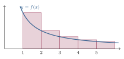

Para arrancarCasi nunca se puede sumar una serie, pero sí decidir si converge. Comparación, cociente, raíz, integral: cada criterio es una lupa distinta, y escoger la lupa es la mitad del trabajo.
Casi nunca se puede calcular la suma de una serie. Lo que sí se puede, casi siempre, es decidir si converge. En este capítulo todas las series son de términos positivos: sus sumas parciales son crecientes y, por el Teorema 18.5, convergen si y solo si están acotadas.
Sea f continua, positiva y decreciente en [1,∞) y an=f(n). Entonces ∑an y ∫1∞f(x)dx convergen o divergen juntas. Además, ∫1N+1f(x)dx≤n=1∑Nan≤a1+∫1Nf(x)dx.
Demostraciónmostrar
Como f es decreciente, en [n,n+1] se tiene an+1≤f(x)≤an. Integrando, an+1≤∫nn+1f≤an, y sumando se obtienen las desigualdades. Si la integral converge, las sumas parciales están acotadas; si diverge, la cota inferior tiende a infinito.

Los rectángulos de alturas a1,a2,… quedan por encima de la curva: ∑n=1Nan≥∫1N+1f.
Que ∑1/n2 converge lo sabían los Bernoulli; su suma resistió a los mejores matemáticos hasta que en 1734 Euler, con 28 años, demostró que 1+41+91+161+⋯=6π2. ¿Qué hace π en una suma de inversos de cuadrados? Una demostración rigurosa se obtiene con series de Fourier (curso de Análisis II). La función ζ(s)=∑n−s resultó ser la puerta a la distribución de los números primos y a la hipótesis de Riemann, el problema abierto más famoso de la matemática.
Si an,bn>0 y limbnan=c con 0<c<∞, entonces ∑an y ∑bn convergen o divergen juntas.
Son los mismos criterios del capítulo 10 para integrales impropias. La estrategia práctica: comparar con la p-serie o la geométrica que «se parece» al término general para n grande.
Sea an>0 y L=n→∞limanan+1. Si L<1 la serie converge; si L>1 (o L=∞) diverge; si L=1 el criterio no decide.
Demostraciónmostrar
Si L<1, tomemos r con L<r<1. Para n≥N, an+1≤ran, luego aN+k≤aNrk y la serie se compara con una geométrica de razón r. Si L>1, la sucesión termina siendo creciente y an→0.
(a) Diverge: comparación en el límite con n1. (b) Converge: la razón n+15→0. (c) Converge: criterio de la integral, ∫1∞xe−x2dx=2e1. (d) Converge: es menor que n3/21. (e) Diverge: la razón (n+1)2(2n+2)(2n+1)→4.
Ojo, parcero: errores que veo en los parciales
cociente con límite 1 ⇒ diverge → con límite 1 el criterio NO decide
comparar hacia el lado equivocado → para converger, acota por ARRIBA con una convergente
✦Practica activa
Retos para afianzar las ideas del capítulo: experimenta en el laboratorio y arma la demostración con los bloques en el orden correcto y caza el paso falso de un argumento.
🔬 Laboratorio · elige el siguiente pasoEscoge la lupa
🧩 Ordena la soluciónCriterio del cociente
Estudia n≥1∑2nn2.
🔍 Encuentra el errorCociente igual a 1
Se estudia ∑n21 con el criterio del cociente.
✎ Repaso del capítulo
∑np1 converge si y solo si…
Criterio de la integral con ∫1∞x−pdx: converge si y solo si p>1.
∑n=1∞n21 (Euler)
Euler probó que ∑n21=6π2≈1,6449.
∑n!2n…
Cociente: 2n/n!2n+1/(n+1)!=n+12→0<1: converge.
∑nlnn1 converge.
∫2∞xlnxdx=ln(lnx)2∞=∞: por el criterio de la integral diverge. Falso.
Para ∑n2+n1 conviene…
n2+n1<n21 y ∑n21 converge: por comparación, también converge.